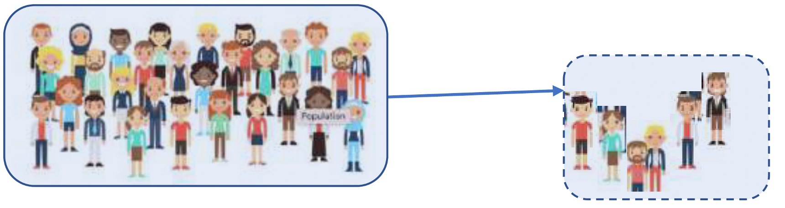
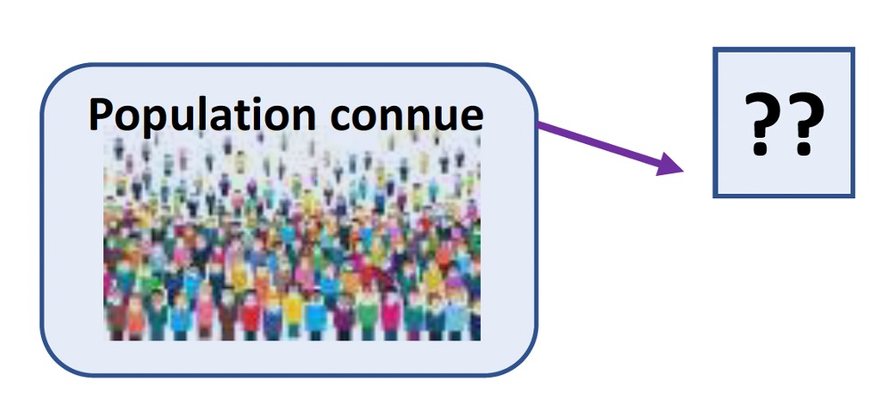
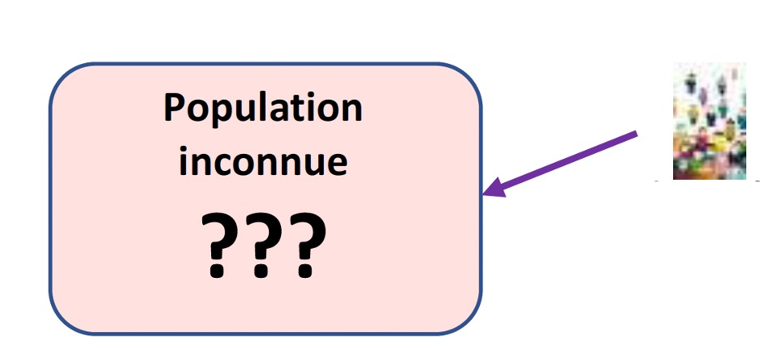

Le guide pédagogique vise à expliciter la rénovation du DCG privilégiant un enseignement de la discipline par une contextualisation des enseignements en mettant en situation les étudiants, permettant une mise en perspective des notions et mécanismes, ancrée dans un contexte professionnel.
Ce guide pédagogique présentera :
Aujourd'hui, la fonction et le métier de contrôleur de gestion ont considérablement évolué. Historiquement centrée sur les outils quantitatifs et monétaires, la fonction a évolué depuis environ 30 ans pour intégrer la dimension qualitative, notamment l'approche extra-financière. Le contrôleur de gestion devient ainsi à la fois un conseiller des dirigeants et un communicant pour les parties prenantes. C'est dans cet esprit qu'a été bâti le nouveau programme de l'UE 11.
Celui-ci a été rédigé pour répondre à quatre objectifs principaux :
L'ensemble de ces objectifs doit permettre d'analyser tous les outils dans leur contexte, afin de développer un esprit critique de synthèse.
Pour toutes les UE du DCG et DSCG et en particulier l'UE 11 du contrôle de gestion, il est essentiel de travailler avec les élèves étudiants sur les verbes d'action des compétences, au-delà des seules connaissances.
Le contrôle de gestion doit être présenté dans son contexte actuel, avec les évolutions technologiques et les évolutions des besoins en information (indicateurs extra financiers, durabilité).
L'étudiant doit être capable de comprendre une démarche, un outil, de l'appliquer concrètement sur un terrain, une organisation et aussi d'en analyser les avantages et les inconvénients.
Toutes les organisations, privées, publiques, associatives, commerciales, industrielles et de service peuvent être présentées pour analyser la diversité des besoins et des solutions qu'apportent le contrôle de gestion à ces terrains.
La logique de présentation des compétences professionnelles et des savoirs associés repose sur les trois dimensions de la boite à outil du contrôle de gestion : les coûts, les budgets et les indicateurs. Après avoir présenté le périmètre, les rôles, l'évolution du contrôle de gestion pour les prises de décision et le pilotage des organisations (1/), il s'agit de repérer tous les outils, méthodes et démarches, leurs intérêts et limites pour les utiliser, les interpréter, les améliorer le cas échéant (2/3/4/).
Dans chaque partie apparaissent une partie calcul et une partie analyse avec intégration des utilités, limites et risques de chaque méthode.
La capacité à analyser sera complétée à chaque fois par la rédaction d'un écrit pour argumenter sur une situation et conseiller un décideur.
D'autre part, dans le cadre des heures de modules méthodologiques, une mise en œuvre pratique d'outils et de méthodes sera proposée sur tableur (voir point 3 du guide pédagogique).
Tous les savoirs et compétences liés à cette première partie sont à réutiliser sur les parties suivantes.
Le volume horaire de cette première partie est conséquent car il va imposer une interprétation et une exploitation sur toutes les autres parties du programme.
| Compétences professionnelles | Savoirs |
|---|---|
|
|
| Compétences professionnelles | Savoirs |
|---|---|
|
|
➪ Le programme intègre une nouvelle notion, la durabilité, ainsi qu'un nouveau positionnement des tableaux de bord.
Rappel : Les compétences et savoirs de la partie 1/ doivent être réexploitées également dans cette partie.
| Compétences professionnelles | Savoirs |
|---|---|
|
|
➪ Le programme renforce la diversité des contextes, notamment ceux du secteur public et des associations.
| Compétences professionnelles | Savoirs |
|---|---|
|
|
➪ Le programme intègre un nouveau point : le calcul et l'analyse de l'élasticité Prix / Demande.
| Compétences professionnelles | Savoirs |
|---|---|
|
|
Rappel : Les compétences et savoirs de la partie 1/ doivent être réexploitées également dans cette partie.
| Compétences professionnelles | Savoirs |
|---|---|
|
|
| Compétences professionnelles | Savoirs |
|---|---|
|
|
➪ Les budgets ne sont pas à construire, seuls les outils de prévision sont abordés.
Dans les outils de prévisions des budgets commerciaux :
Dans les outils de prévisions de production :
Dans les outils de prévisions des ressources humaines :
Dans les outils de prévisions d'approvisionnement :
| Compétences professionnelles | Savoirs |
|---|---|
|
|
Rappel : Les compétences et savoirs de la partie 1/ doivent être réexploitées également dans cette partie.
| Compétences professionnelles | Savoirs |
|---|---|
|
|
➪ Le programme intègre un nouveau point : les indicateurs de durabilité.
- Exemples d'indicateurs de durabilité pouvant être abordés (liste non exhaustive) :
| Compétences professionnelles | Savoirs |
|---|---|
|
|
| Compétences professionnelles | Savoirs |
|---|---|
|
|
| Compétences professionnelles | Savoirs |
|---|---|
|
|
➪ Le programme intègre un nouveau point : le prix de cession interne.
Prérequis : les savoirs et compétences des UE comptables (UE 9 & UE 10) et de finance (UE 6) du DCG sont à mettre en œuvre avec le contrôle de gestion.
Transversalité : une transversalité de notions sera principalement mise en œuvre avec l'UE 7 de management du DCG.
Prolongement : la dimension stratégique du contrôle de gestion sera davantage développée dans l'UE 3 du DSCG.
La répartition du volume horaire entre les 4 parties du programme montre que les coûts et les outils de la performance sont les deux parties les plus développées.
De plus, la première partie doit donner la place à la présentation des contextes, des tendances pour les appliquer ensuite sur des terrains différents. Les heures de cette première partie peuvent être intégrées dans les trois autres parties.
La pratique du tableur peut être incluse dans d'autres modules horaires.
L'usage de la calculatrice est autorisé.
Les quatre parties du référentiel sont abordées. Cela ne signifie pas nécessairement qu'il y a un dossier par partie du programme.
La maîtrise des méthodes, outils et des calculs est aussi importante que l'analyse critique de ces outils.
Tous les contextes et terrains d'application peuvent être mobilisés : entreprise industrielle, de service, PME, organisation privée ou publique et association.
La rédaction de l'analyse, des critiques, des préconisations est demandée et valorisée.
Deux exemples de sujets zéro avec leurs corrigés seront disponibles sur le site du CRCF.
Ces propositions sont indicatives, ni impératives ni exhaustives. Elles ont vocation à illustrer une approche du référentiel centrée sur les compétences que les étudiants devront acquérir et mobiliser en vue de la certification de l'UE.
Pour montrer les nouveaux rôles, les compétences demandées, l'importance de la synthèse, de la rédaction, de la communication, présenter les offres d'emplois sur :
Une évolution constatée dans les grandes entreprises : le contrôle de gestion sociale : association des ressources humaines et du contrôle de gestion.
Thème 1 - Utilisation basique du tableur avec le calcul de coûts ou le calcul des écarts par exemple.
Dans ce thème, les objectifs de l'utilisation du tableur sont de créer des maquettes, d'automatiser des calculs, de faire des simulations…
Thème 2 - Utilisation des formules et outils du tableur applicables au contrôle de gestion.
Thème 3 - Traitement d'un volume important de données.
Des ressources en lien avec le nouveau programme seront progressivement disponibles sur le site du CRCF : crcf-edu.fr
On pourra notamment montrer les possibilités du contrôle de gestion avec l'utilisation de logiciels, de plateformes, d'IA.
Quelques ressources allant dans ce sens :
Il s'agit de proposer des exemples pour caractériser les spécificités, les objectifs et les besoins d'organisations qui sont différentes des entreprises industrielles.
Si le décret RGCP du 29 décembre 1962 préconisait déjà la tenue d'une comptabilité analytique pour les entités publiques, la loi organique relative aux lois de finances (LOLF) de 2001 l'a instauré en intégrant les besoins de contrôle de gestion. Plus récemment, le décret relatif à la gestion budgétaire et comptable publique (GBCP) de 2012 a harmonisé les principes de finances publiques à l'ensemble des administrations, dans le prolongement de recommandations du Parlement et de la Cour des comptes.
Le développement des systèmes d'information et les nouvelles approches numériques, en particulier des progiciels de gestion intégrée (PGI/ERP) dans la sphère publique, ont augmenté la capacité de mise en qualité, de collecte et de traitement plus rapide de la donnée. La dématérialisation, la gestion électronique de la documentation et l'automatisation de certaines tâches réorientent la fonction vers de nouvelles activités. L'informatique décisionnelle est ainsi mise à profit par les entités publiques pour un meilleur usage de la donnée débouchant sur une prise de décision fondée sur des éléments tangibles. De nombreux organismes sont ainsi en cours de développement de systèmes d'information d'aide à la décision, fondés sur le renforcement du pilotage opérationnel et stratégique, avec des indicateurs transverses reposant sur l'ensemble des sources disponibles.
Dans ce contexte, le contrôleur de gestion peut se détacher d'actions liées à la collecte et au traitement de la donnée pour se concentrer sur l'analyse et les restitutions, soit ce qui permet dans les faits d'aider la gouvernance de l'entité. Grâce à sa connaissance de la donnée, le contrôleur de gestion est au centre de la mise à profit effective des nouveaux outils. Il est le mieux placé pour accompagner les changements opérés dans le cadre de ces modernisations. Il peut alors davantage intervenir dans l'amélioration des processus, des communications internes et externes, tout cela pour appuyer les décideurs publics. Et s'implique directement dans la transformation digitale de la fonction financière, dans l'accompagnement au changement, et plus largement dans la modernisation de la gestion.
« Repenser le management des organisations publiques sous le prisme du contrôle de gestion » aux éditions Vuibert paru en mai 2023.
Dans l'environnement actuel des établissements de santé (tarification à l'activité, réforme de la gouvernance), la comptabilité analytique hospitalière devient de plus en plus importante pour le pilotage des établissements. Ces apports ne sont toutefois pas suffisants, et les enjeux nécessitent le développement d'un contrôle de gestion complet.
1- Les apports de la comptabilité analytique hospitalière
La comptabilité analytique hospitalière est fondamentale pour :
Toutefois, les attentes des dirigeants, directeurs et médecins ne sont pas exclusivement comptables ; ils ont également besoin d'une information plus opérationnelle et stratégique.
2- Les enjeux du contrôle de gestion hospitalier
La réforme des établissements de santé mettant en œuvre la tarification à l'activité (cf loi n° 2003-1199 du 18.12.2003) a bouleversé les mentalités internes des établissements en instituant de nouvelles règles budgétaires fondées sur leurs résultats d'activité. De cette situation sont nés une recherche d'augmentation de l'activité et de sa croissance, ainsi qu'un désir d'estimer la contribution de chacune des activités à l'équilibre financier global des établissements.
La mise en place de la tarification à l'activité a profondément modifié le dialogue de gestion en introduisant le concept de « recettes » pour les activités médicales jusque-là uniquement décrites à l'aune de leurs coûts.
Cela a constitué le point de départ de la mise en place d'une véritable culture de gestion dans les établissements hospitaliers.
Suivre, analyser en détail les recettes d'hospitalisation, de consultations... des services, c'est faire du « reporting des ventes », face cachée du contrôle de gestion. Étudier les taux d'occupation des services ou des blocs, analyser les durées des séjours, suivre les indicateurs IPAQS... c'est faire du contrôle de gestion.
Ne pas confondre distributions d'échantillonnage et estimations qui sont deux processus totalement différents.
L'échantillonnage permet de faire des estimations notamment, ou de l'échantillonnage pur ou des tests paramétriques et non paramétriques. Les tests ne sont pas au programme. De plus, dans le nouveau programme du DCG, nous ne nous intéresserons qu'aux variables quantitatives (paramètres : m la moyenne et σ l'écart-type).

| Population initiale appelée Population mère | Échantillon prélevé (au hasard) de taille n |
|---|---|
| La population possède des caractéristiques théoriques (loi suivie, etc…) Moyenne = m (variable quantitative) Variance = σ² (variable quantitative) |
Les paramètres sont observés (calculés) donc ici les valeurs sont empiriques Moyenne = x̄ (variable quantitative) Variance = s² (variable quantitative) |
Un cours super bien expliqué sur : imo.universite-paris-saclay.fr — échantillonnage
Il y a une multitude d'échantillons de même taille possibles sur une même population. Or les paramètres observés vont varier d'un échantillon à l'autre (exemple : si vous tirez au sort Bill Gates dans un échantillon pour mesurer le revenu moyen des ménages…). On étudie donc les lois de probabilités qui vont mesurer ces fluctuations d'échantillonnage.
Pour la moyenne (cas d'une variable quantitative) :
Soit X̄ la v.a. modélisant la moyenne observée sur un échantillon de taille n ≥ 30 alors le théorème centrale-limite nous permet de dire que X̄ suit une loi normale.
E(X̄) = m la moyenne de la population mère et V(X̄) = σ²/n, σ² étant la variance de la population mère.
Deux utilisations totalement différentes et à ne pas confondre : soit cela nous sert à estimer à partir d'un échantillon les paramètres de la population ; soit à regarder comment se comporte un échantillon connaissant la population.
| Comportement de l'échantillon | Estimations |
|---|---|
|
 Population connue → Que se passe-t-il (ou que doit-il se passer) sur l'échantillon ? C'est tout ce que nous avons vu sur les distributions d'échantillonnage. On connait la loi de probabilité suivie par la moyenne sur un échantillon de taille n : X̄ ↝ 𝒩( m ; σ/√n )
Dans ce cas de figure ; on connait les paramètres de la population mère.
On peut par exemple vérifier qu'un échantillon observé correspond bien à un échantillon théorique issu de la population mère (exemple : on a une machine réglée pour usiner des pièces à un diamètre moyen m. On prélève un échantillon et on observe le diamètre moyen x̄ observé. Cette valeur est-elle cohérente ? Ou bien la machine est-elle déréglée ?).On va donc encadrer la valeur de X̄ pour voir si la valeur observée est dans l'intervalle de confiance. Avec un risque de α on obtient : P( m − t·σ/√n < X̄ < m + t·σ/√n ) = 1 − α Où t est la valeur lue sur la table pour une probabilité de 1 − α/2. Remarque : en réalité dans ce cas de figure, on devrait effectuer un test paramétrique (non au programme) c'est le même raisonnement.
Remarque X̄: dans le premier cas c'est bien la variable de l'échantillon qu'on encadre (donc avec les paramètres de la population mère).
|
 Population inconnue → On a observé un échantillon – Qu'en déduire pour la population mère ? L'échantillon peut nous permettre d'estimer les caractéristiques de la population inconnue. On se sert encore de X̄ ↝ 𝒩( m ; σ/√n )
Dans ce cas de figure ; on ne connait pas les paramètres de la population mère et on cherche à les estimer.
Estimation ponctuelle (donc beaucoup moins « juste ») :x̄ est un estimateur sans biais et convergent de m, donc c'est un bon estimateur de m. s′ = √(n/(n−1)) · s est un estimateur sans biais et convergent de σ, donc c'est un bon estimateur de σ. Estimation par intervalle de confiance (donc beaucoup plus « juste ») : On va encadrer la valeur de m en fonction de x̄ observé. Avec un risque de α on obtient : P( x̄ − t·σ/√n < m < x̄ + t·σ/√n ) = 1 − α Où t est la valeur lue sur la table pour une probabilité de 1 − α/2.
Remarque m : dans le 2ème cas c'est bien la variable de la population mère qu'on encadre (donc avec les paramètres de l'échantillon). |
Conclusion : bien repérer le cas de figure dans lequel on se trouve : est-ce que l'on part de la population mère connue pour regarder le comportement de l'échantillon ? auquel cas on encadre la moyenne de l'échantillon (X̄) avec la valeur de la moyenne de la population (m) OU est-ce que l'on part de l'échantillon pour estimer les paramètres de la population mère auquel cas on encadre la moyenne de la population (m) avec la valeur observée sur l'échantillon (x̄).
Remarque : dans les deux cas, l'intervalle à retenir est construit de la même façon.
Le petit quelque chose en plus ou en moins est lié au risque pris. Celui-ci est donc le produit de la valeur t correspondant au risque accepté et à l'écart-type de l'échantillon σ/√n.
Situation 1 : Comportement de l'échantillon
Des roulements à billes sont normalement usinés à un diamètre de 4 mm avec un écart-type de 0,05 mm (« normalement » signifiant « quand la machine fonctionne correctement »). Pour le contrôle de la qualité, on prélève régulièrement des échantillons de taille 100. Quelle est la probabilité que le diamètre moyen observé soit > à 3,995 ?
Ici on est bien dans le cas de figure où l'on connait la population et on cherche à savoir ce qu'il se passe sur l'échantillon
(Population connue → Que se passe-t-il (ou que doit-il se passer) sur l'échantillon ?).
Soit X̄ la v.a. modélisant le diamètre moyen observé sur un échantillon de n = 100 pièces.
On sait que X̄ ↝ 𝒩( m ; σ/√n ) donc 𝒩( 4 ; 0,05/√100 ), c'est à dire X̄ ↝ 𝒩( 4 ; 0,005 ).
P(X̄ > 3,995) = P( T > (3,995 − 4)/0,005 ) on a centré réduit
P(X̄ > 3,995) = P(T > −1) = P(T < 1) = 0,8413
Suite de l'exercice : Sur un échantillon prélevé le mardi, on a relevé un diamètre moyen de 3,98 mm. Effectuer un intervalle de confiance du diamètre moyen observé sur un échantillon quelconque de taille n = 100 au seuil de 5% pour conclure quant à la qualité ?
Avec un risque de 5% on obtient :
P( 4 − t · 0,005 < X̄ < 4 + t · 0,005 ) = 0,95
Où t est la valeur lue sur la table pour une probabilité de 0,975 soit t = 1,96
On obtient donc P( 3,9902 < X̄ < 4,0098 ) = 0,95
3,98 mm ne correspond pas à l'intervalle de confiance, donc avec un risque de 5%, on peut affirmer que la machine est déréglée, les pièces ne sont plus conformes.
Remarque : dans les exercices, on ira souvent directement à la question 2 sans étape intermédiaire.
Situation 2 : estimations
Une entreprise fabrique des savons de poids moyen 50 g et un écart-type de 3 g. Sur un échantillon de taille 100, on a observé un poids moyen de 48 g. L'entreprise considère que si le poids moyen à la sortie de la machine est inférieur à 50 g, il faut reparamétrer la machine.
Effectuer une estimation par intervalle de confiance, au seuil de 5% du poids moyen obtenu sur la production issue de la machine.
Ici on est bien dans le cas de figure où l'on ne connait pas la population et on cherche à estimer un paramètre (ici la moyenne m) de cette population
(Population inconnue → On a observé un échantillon – Qu'en déduire pour la population mère ?).
➪ Le programme renforce des points notamment l'étude du contrôle de gestion dans tous types d'organisation et d'activités.